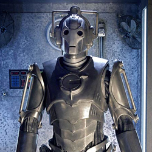

| Home | The Doctors | The Companions | The Villains |
|
|||
| cf
CybermenOriginally born on Earth’s twin planet Mondas, the Cybermen were created as the Mondasians replaced parts of their dying bodies with plastic and steel. Eventually they added emotional inhibitors, supressing all feelings – love, hate, even fear. Cybermen can convert humans wherever they go, and take orders from a Cyberleader, whose data can be downloaded to a drone if the leader is destroyed. Like the Daleks, the Cybermen have dogged the Doctor through space and time. He has prevented them destroying Earth’s weather system, getting their hands on the Nemesis statue and taking over Victorian London with their Cyber-King. The Tenth Doctor visited a parallel universe, where Cybus Industrieshad developed Cybermen to prolong John Lumic’s dwindling life.
|